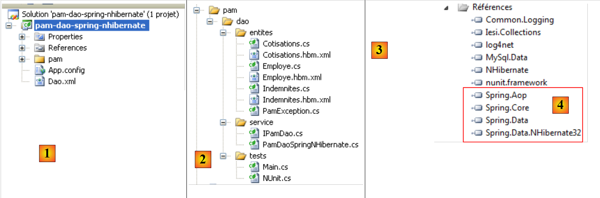
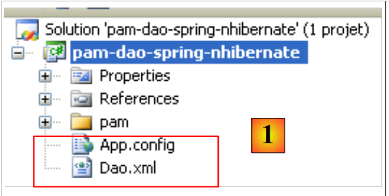

2. Integração Spring / NHibernate
O framework Spring disponibiliza classes utilitárias para trabalhar com o framework NHibernate. A utilização destas classes simplifica a escrita do código de acesso aos dados de um SGBD. Consideremos a seguinte arquitetura multicamadas:
 |
A seguir, iremos construir uma camada [dao] com [Spring / NHibernate], comentando o código de uma solução funcional. Não pretendemos abordar todas as possibilidades de configuração ou utilização do framework [Spring / Nhibernate]. O leitor poderá adaptar a solução proposta aos seus próprios problemas, recorrendo à documentação de Spring.NET [Spring.NET | Homepage ] (dezembro de 2011).
2.1. A camada de acesso aos dados [dao]
 |
A base de dados é a base MySQL [dbpam_nhibernate] já apresentada no parágrafo 1.2. A camada [dao] implementa a seguinte interface C#:
using Pam.Dao.Entites;
namespace Pam.Dao.Service {
public interface IPamDao {
// lista de todas as identidades dos funcionários
Employe[] GetAllIdentitesEmployes();
// um funcionário específico com os seus subsídios
Employe GetEmploye(string ss);
// lista de todas as contribuições
Cotisations GetCotisations();
}
}
2.1.1. O projeto Visual Studio C# da camada [dao]
O projeto do Visual Studio da camada [dao] é o seguinte:
 |
- em [1], o projeto na sua totalidade
- a pasta [pam] contém as classes do projeto, bem como a configuração das entidades NHibernate
- os ficheiros [App.config] e [Dao.xml] configuram o framework Spring / NHibernate. Teremos de descrever o conteúdo destes dois ficheiros.
- No ficheiro [2], encontram-se as diferentes classes do projeto
- na pasta [entites], encontramos as entidades NHibernate analisadas no projeto anterior (ver página 14)
- na pasta [service], encontramos a interface [IPamDao] e a sua implementação com o framework Spring / NHibernate [PamDaoSpringNHibernate].
- A pasta [tests] contém os testes da interface [IPamDao].
- Em [3], encontram-se as referências do projeto. A integração Spring / NHibernate requer novas DLL e [4].
Nas referências [3] do projeto, encontram-se as seguintes DLL:
- NHibernate: para o ORM NHibernate
- MySql.Data: o controlador ADO.NET do SGBD MySQL 5
- Spring.Core: para o framework Spring, que assegura a integração das camadas
- log4net: uma biblioteca de registos
- nunit.framework: uma biblioteca de testes unitários
- Spring.Aop, Spring.Data e Spring.Data.NHibernate32: garantem o suporte ao Spring / NHibernate.
Iremos garantir que todos estes DLL tenham a sua propriedade «Cópia local» definida para True.
2.1.2. A configuração do projeto C#
O projeto está configurado da seguinte forma:
 |
- em [1], o nome do assembly do projeto é [pam-dao-spring-nhibernate]. Este nome surge em vários ficheiros de configuração do projeto.
2.1.3. As entidades da camada [dao]
 |
As entidades (objetos) necessárias para a camada [dao] foram reunidas na pasta [entites] [1] do projeto. Estas entidades são as do projeto anterior (ver parágrafo 1.3.2), com uma única diferença que se encontra nos ficheiros de configuração NHibernate. Tomemos, por exemplo, o ficheiro [Employe.hbm.xml]:
- no [2], o ficheiro está configurado para ser incorporado no assembly do projeto
O seu conteúdo é o seguinte:
<?xml version="1.0" encoding="utf-8" ?>
<hibernate-mapping xmlns="urn:nhibernate-mapping-2.2"
namespace="Pam.Dao.Entites" assembly="pam-dao-spring-nhibernate">
<class name="Employe" table="EMPLOYES">
<id name="Id" column="ID">
<generator class="native" />
</id>
<version name="Version" column="VERSION"/>
<property name="SS" column="SS" length="15" not-null="true" unique="true"/>
<property name="Nom" column="NOM" length="30" not-null="true"/>
<property name="Prenom" column="PRENOM" length="20" not-null="true"/>
<property name="Adresse" column="ADRESSE" length="50" not-null="true" />
<property name="Ville" column="VILLE" length="30" not-null="true"/>
<property name="CodePostal" column="CP" length="5" not-null="true"/>
<many-to-one name="Indemnites" column="INDEMNITE_ID" cascade="all" lazy="false"/>
</class>
</hibernate-mapping>
- linha 3: o atributo assembly indica que o ficheiro [Employe.hbm.xml] se encontra no assembly [pam-dao-spring-nhibernate]
Além disso, na pasta [entites], encontramos uma classe de exceção utilizada pelo projeto:
using System;
namespace Pam.Dao.Entites {
public class PamException : Exception {
// o código do erro
public int Code { get; set; }
// fabricantes
public PamException() {
}
public PamException(int Code)
: base() {
this.Code = Code;
}
public PamException(string message, int Code)
: base(message) {
this.Code = Code;
}
public PamException(string message, Exception ex, int Code)
: base(message, ex) {
this.Code = Code;
}
}
}
A classe [PamException] foi derivada da classe [Exception] (linha 4) para lhe adicionar um código de erro (linha 7).
2.1.4. Configuração Spring / NHibernate
Voltemos ao projeto Visual C#:
 |
- No [1], os ficheiros [App.config] e [Dao.xml] configuram a integração Spring / NHibernate
2.1.4.1. O ficheiro [App.config]
O ficheiro [App.config] é o seguinte:
<?xml version="1.0" encoding="utf-8" ?>
<configuration>
<!-- secções de configuração -->
<configSections>
<sectionGroup name="spring">
<section name="parsers" type="Spring.Context.Support.NamespaceParsersSectionHandler, Spring.Core" />
<section name="objects" type="Spring.Context.Support.DefaultSectionHandler, Spring.Core" />
<section name="context" type="Spring.Context.Support.ContextHandler, Spring.Core" />
</sectionGroup>
<section name="log4net" type="log4net.Config.Log4NetConfigurationSectionHandler,log4net" />
</configSections>
<!-- configuração do Spring -->
<spring>
<parsers>
<parser type="Spring.Data.Config.DatabaseNamespaceParser, Spring.Data" />
</parsers>
<context>
<resource uri="Dao.xml" />
</context>
</spring>
<!-- Esta secção contém as definições de configuração do log4net -->
<!-- NOTE IMPORTANTE: os registos não estão ativos por predefinição. É necessário ativá-los programaticamente
avec l'instruction log4net.Config.XmlConfigurator.Configure();
! -->
<log4net>
<appender name="ConsoleAppender" type="log4net.Appender.ConsoleAppender">
<layout type="log4net.Layout.PatternLayout">
<conversionPattern value="%-5level %logger - %message%newline" />
</layout>
</appender>
<!-- Definir o nível de registo predefinido para DEBUG -->
<root>
<level value="DEBUG" />
<appender-ref ref="ConsoleAppender" />
</root>
<!-- Configurar o registo para o Spring. Os nomes dos registadores no Spring correspondem ao namespace -->
<logger name="Spring">
<level value="INFO" />
</logger>
<logger name="Spring.Data">
<level value="DEBUG" />
</logger>
<logger name="NHibernate">
<level value="DEBUG" />
</logger>
</log4net>
</configuration>
O ficheiro [App.config] acima configura o Spring (linhas 5-9, 15-22), o log4net (linha 10, linhas 28-53), mas não o NHibernate. Os objetos do Spring não estão configurados no [App.config], mas sim no ficheiro [Dao.xml] (linha 20). A configuração do Spring / NHibernate, que consiste na declaração de objetos específicos do Spring, encontra-se, portanto, neste ficheiro.
2.1.4.2. O ficheiro [Dao.xml]
O ficheiro [Dao.xml], que reúne os objetos geridos pelo Spring, é o seguinte:
<?xml version="1.0" encoding="utf-8" ?>
<objects xmlns="http://www.springframework.net"
xmlns:db="http://www.springframework.net/database">
<!-- Referenciado pelo ficheiro de configuração do contexto da aplicação principal -->
<description>
Application Spring / NHibernate
</description>
<!-- Base de dados e NHibernate Configuração -->
<db:provider id="DbProvider"
provider="MySql.Data.MySqlClient"
connectionString="Server=localhost;Database=dbpam_nhibernate;Uid=root;Pwd=;"/>
<object id="NHibernateSessionFactory" type="Spring.Data.NHibernate.LocalSessionFactoryObject, Spring.Data.NHibernate32">
<property name="DbProvider" ref="DbProvider"/>
<property name="MappingAssemblies">
<list>
<value>pam-dao-spring-nhibernate</value>
</list>
</property>
<property name="HibernateProperties">
<dictionary>
<entry key="dialect" value="NHibernate.Dialect.MySQL5Dialect"/>
<entry key="hibernate.show_sql" value="false"/>
</dictionary>
</property>
<property name="ExposeTransactionAwareSessionFactory" value="true" />
</object>
<!-- gerenciador de transações -->
<object id="transactionManager"
type="Spring.Data.NHibernate.HibernateTransactionManager, Spring.Data.NHibernate32">
<property name="DbProvider" ref="DbProvider"/>
<property name="SessionFactory" ref="NHibernateSessionFactory"/>
</object>
<!-- Modelo do Hibernate -->
<object id="HibernateTemplate" type="Spring.Data.NHibernate.Generic.HibernateTemplate">
<property name="SessionFactory" ref="NHibernateSessionFactory" />
<property name="TemplateFlushMode" value="Auto" />
<property name="CacheQueries" value="true" />
</object>
<!-- Objetos de acesso a dados -->
<object id="pamdao" type="Pam.Dao.Service.PamDaoSpringNHibernate, pam-dao-spring-nhibernate" init-method="init" destroy-method="destroy">
<property name="HibernateTemplate" ref="HibernateTemplate"/>
</object>
</objects>
- As linhas 11-13 configuram a ligação à base de dados [dbpam_nhibernate]. Nelas encontra-se:
- o provedor ADO.NET necessário para a ligação, neste caso o provedor do SGBD MySQL. Isto implica ter o DLL e o [Mysql.Data] nas referências do projeto.
- a cadeia de ligação à base de dados (servidor, nome da base de dados, proprietário da ligação, palavra-passe)
- as linhas 15-29 configuram o SessionFactory do NHibernate, o objeto utilizado para obter sessões NHibernate. Recorde-se que todas as operações na base de dados são realizadas no âmbito de uma sessão NHibernate. Na linha 15, pode-se ver que a SessionFactory é implementada pela classe Spring Spring.Data.NHibernate.LocalSessionFactoryObject, encontrada na DLL Spring.Data.NHibernate32.
- Linha 16: a propriedade DbProvider define os parâmetros da ligação à base de dados (provedor ADO.NET e cadeia de ligação). Aqui, esta propriedade faz referência ao objeto DbProvider definido anteriormente nas linhas 11-13.
- linhas 17-20: definem a lista de assemblies que contêm ficheiros [*.hbm.xml] que configuram entidades geridas pelo NHibernate. A linha 19 indica que estes ficheiros se encontram no assembly do projeto. Recordamos que este nome se encontra nas propriedades do projeto C#. Recordamos igualmente que todos os ficheiros [*.hbm.xml] foram configurados para serem incorporados no assembly do projeto.
- linhas 22-27: propriedades específicas de NHibernate.
- linha 24: o dialeto SQL utilizado será o do MySQL
- linha 25: o SQL emitido pelo NHibernate não aparecerá nos registos da consola. Definir esta propriedade como true permite conhecer os comandos SQL emitidos por NHibernate. Isto pode ajudar a compreender, por exemplo, por que razão uma aplicação fica lenta ao aceder à base de dados.
- linha 28: a propriedade ExposeTransactionAwareSessionFactory definida como true fará com que o Spring gere as anotações de gestão de transações que forem encontradas no código C#. Voltaremos a este ponto quando escrevermos a classe que implementa a camada [dao].
- As linhas 32-36 definem o gestor de transações. Mais uma vez, este gestor é uma classe Spring da DLL Spring.Data.NHibernate32. Este gestor precisa de conhecer os parâmetros de ligação à base de dados (linha 34), bem como a SessionFactory da NHibernate (linha 35).
- As linhas 39-43 definem as propriedades da classe HibernateTemplate, mais uma vez uma classe do Spring. Esta classe será utilizada como classe utilitária na classe que implementa a camada [dao]. Facilita as interações com os objetos NHibernate. Esta classe possui algumas propriedades que devem ser inicializadas:
- linha 40: a SessionFactory de NHibernate
- linha 41: a propriedade TemplateFlushMode define o modo de sincronização do contexto de persistência NHibernate com a base de dados. O modo Auto faz com que haja sincronização:
- no final de uma transação
- antes de uma operação select
- linha 42: as consultas HQL (Hibernate Query Language) serão armazenadas em cache. Isto pode resultar num ganho de desempenho.
- as linhas 46-48 definem a classe de implementação da camada [dao]
- linha 46: a camada [dao] será implementada pela classe [PamdaoSpringNHibernate] da DLL [pam-dao-spring-nhibernate]. Após a instanciação da classe, o método init da classe será executado imediatamente. Ao fechar o contentor Spring, o método destroy da classe será executado.
- linha 47: a classe [PamDaoSpringNHibernate] terá uma propriedade HibernateTemplate que será inicializada com a propriedade HibernateTemplate da linha 39.
2.1.5. Implementação da camada [dao]
2.1.5.1. Estrutura da classe de implementação
A interface [IPamDao] é a seguinte:
using Pam.Dao.Entites;
namespace Pam.Dao.Service {
public interface IPamDao {
// Lista de todas as identidades dos funcionários
Employe[] GetAllIdentitesEmployes();
// um funcionário específico com os seus subsídios
Employe GetEmploye(string ss);
// lista de todas as contribuições
Cotisations GetCotisations();
}
}
- linha 1: importa-se o espaço de nomes das entidades da camada [dao].
- linha 3: a camada [dao] encontra-se no espaço de nomes [Pam.Dao.Service]. Os elementos do espaço de nomes [Pam.Dao.Entites] podem ser criados em várias instâncias. Os elementos do espaço de nomes [Pam.Dao.Service] são criados numa única instância (singleton). Foi isso que justificou a escolha dos nomes dos espaços de nomes.
- linha 4: a interface chama-se [IPamDao]. Define três métodos:
- na linha 6, [GetAllIdentitesEmployes] devolve um array de objetos do tipo [Employe] que representa a lista de amas num formato simplificado (apelido, nome próprio, SS).
- na linha 8, [GetEmploye] devolve um objeto [Employe]: o trabalhador cujo número de segurança social foi passado como parâmetro ao método, juntamente com as indemnizações associadas ao seu índice.
- na linha 10, [GetCotisations] devolve o objeto [Cotisations], que encapsula as taxas das diferentes contribuições sociais a deduzir do salário bruto.
O esboço da classe de implementação desta interface com o suporte Spring / NHibernate poderia ser o seguinte:
using System;
using System.Collections;
using System.Collections.Generic;
using Pam.Dao.Entites;
using Spring.Data.NHibernate.Generic.Support;
using Spring.Transaction.Interceptor;
namespace Pam.Dao.Service {
public class PamDaoSpringNHibernate : HibernateDaoSupport, IPamDao {
// campos privados
private Cotisations cotisations;
private Employe[] employes;
// inicialização
[Transaction(ReadOnly = true)]
public void init() {
...
}
// eliminação de objeto
public void destroy() {
if (HibernateTemplate.SessionFactory != null) {
HibernateTemplate.SessionFactory.Close();
}
}
// lista de todas as identidades dos funcionários
public Employe[] GetAllIdentitesEmployes() {
return employes;
}
// um funcionário específico com as suas prestações
[Transaction(ReadOnly = true)]
public Employe GetEmploye(string ss) {
....
}
// lista de contribuições
public Cotisations GetCotisations() {
return cotisations;
}
}
}
- linha 9: a classe [PamDaoSpringNHibernate] implementa corretamente a interface da camada [dao] [IPamDao]. Deriva também da classe Spring [HibernateDaoSupport]. Esta classe possui uma propriedade [HibernateTemplate] que é inicializada pela configuração do Spring que foi definida (linha 2 abaixo):
<object id="pamdao" type="Pam.Dao.Service.PamDaoSpringNHibernate, pam-dao-spring-nhibernate" init-method="init" destroy-method="destroy">
<property name="HibernateTemplate" ref="HibernateTemplate"/>
</object>
- Na linha 1 acima, verifica-se que a definição do objeto [pamdao] indica que os métodos init e destroy da classe [PamDaoSpringNHibernate] devem ser executados em momentos específicos. Estes dois métodos estão efetivamente presentes na classe, nas linhas 16 e 21.
- linhas 15, 34: anotações que fazem com que o método anotado seja executado numa transação. O atributo ReadOnly=true indica que a transação é de leitura única. O método executado na transação pode lançar uma exceção. Nesse caso, o Spring efetua automaticamente um Rollback da transação. Esta anotação elimina a necessidade de gerir uma transação no interior do método.
- linha 16: o método init é executado pelo Spring imediatamente após a instanciação da classe. Veremos que o seu objetivo é inicializar os campos privados das linhas 11 e 12. Será executado numa transação (linha 15).
- Os métodos da interface [IPamDao] são implementados nas linhas 28, 35 e 40.
- linhas 28-30: o método [GetAllIdentitesEmployes] limita-se a definir o atributo da linha 12, que foi inicializado pelo método init.
- linhas 40-42: o método [GetCotisations] limita-se a retornar o atributo da linha 11, inicializado pelo método init.
2.1.5.2. Métodos úteis da classe HibernateTemplate
Iremos utilizar os seguintes métodos da classe HibernateTemplate:
executa a consulta HQL e devolve uma lista de objetos do tipo T | |
executa uma consulta HQL parametrizada por ?. Os valores destes parâmetros são fornecidos pela tabela de objetos. | |
retorna todas as entidades do tipo T |
Existem outros métodos úteis que não teremos oportunidade de utilizar e que permitem recuperar, guardar, atualizar e eliminar entidades:
insere na sessão NHibernate a entidade do tipo T com a chave primária id. | |
insere (INSERT) ou atualiza (UPDATE) o objeto entité, consoante este possua ou não uma chave primária (UPDATE) (INSERT). A ausência de chave primária pode ser configurada através do atributo unsaved-values do ficheiro de configuração da entidade. Após a operação SaveOrUpdate, o objeto entité encontra-se na sessão NHibernate. | |
elimina o objeto entité da sessão NHibernate. |
2.1.5.3. Implementação do método init
O método init da classe [PamDaoSpringNHibernate] é, por configuração, o método executado após a instanciação da classe pelo Spring. O seu objetivo é armazenar em cache local as identidades simplificadas dos funcionários (apelido, nome próprio, SS) e as taxas de contribuição. O seu código poderia ser o seguinte.
[Transaction(ReadOnly = true)]
public void init() {
try {
// recupera-se a lista simplificada dos funcionários
IList<object[]> lignes = HibernateTemplate.Find<object[]>("select e.SS,e.Nom,e.Prenom from Employe e");
// coloca-se a lista numa tabela
employes = new Employe[lignes.Count];
int i = 0;
foreach (object[] ligne in lignes) {
employes[i] = new Employe() { SS = ligne[0].ToString(), Nom = ligne[1].ToString(), Prenom = ligne[2].ToString() };
i++;
}
// colocam-se as taxas de contribuições num objeto
cotisations = (HibernateTemplate.LoadAll<Cotisations>())[0];
} catch (Exception ex) {
// transforma-se a exceção
throw new PamException(string.Format("Erreur d'accès à la BD : [{0}]", ex.ToString()), 43);
}
}
- linha 5: é executada uma consulta HQL. Esta consulta solicita os campos SS, Apelido e Nome próprio de todas as entidades Employé. Devolve uma lista de objetos. Se tivéssemos solicitado todos os dados do funcionário na forma «select e from Employe e», teríamos obtido uma lista de objetos do tipo Employe.
- linhas 7-12: esta lista de objetos é copiada para uma matriz de objetos do tipo Employe.
- linha 14: solicita-se a lista de todas as entidades do tipo Cotisations. Sabe-se que esta lista tem apenas um elemento. Recupera-se, portanto, o primeiro elemento da lista para obter as taxas de contribuição.
- As linhas 7 e 14 inicializam os dois campos privados da classe.
2.1.5.4. Implementação do método GetEmploye
O método GetEmploye deve devolver a entidade «Empregado» com um determinado n.º SS. O seu código poderia ser o seguinte:
[Transaction(ReadOnly = true)]
public Employe GetEmploye(string ss) {
IList<Employe> employés = null;
try {
// consulta
employés = HibernateTemplate.Find<Employe>("select e from Employe e where e.SS=?", new object[]{ss});
} catch (Exception ex) {
// transformamos a exceção
throw new PamException(string.Format("Erreur d'accès à la BD lors de la demande de l'employé de n° ss [{0}] : [{1}]", ss, ex.ToString()), 41);
}
// foi recuperado algum colaborador?
if (employés.Count == 0) {
// notifica-se o facto
throw new PamException(string.Format("L'employé de n° ss [{0}] n'existe pas", ss), 42);
} else {
return employés[0];
}
}
- linha 6: obtém a lista de funcionários com um determinado n.º SS
- linha 12: normalmente, se o funcionário existir, deve ser obtida uma lista com um único elemento
- linha 14: se não for esse o caso, lança-se uma exceção
- linha 16: se for esse o caso, devolve-se o primeiro funcionário da lista
2.2. Testes da camada [dao]
2.2.1. O projeto do Visual Studio
O projeto do Visual Studio já foi apresentado. Recorde-se que:
 |
- em [1], o projeto na sua totalidade
- em [2], as diferentes classes do projeto. A pasta [tests] contém um teste de consola [Main.cs] e um teste unitário [NUnit.cs].
- em [3], o programa [Main.cs] é compilado.
 |
- no [4], o ficheiro [NUnit.cs] não é gerado.
- O projeto é uma aplicação de consola. A classe executada é a especificada em [5], a classe do ficheiro [Main.cs].
2.2.2. O programa de teste de consola [Main.cs]
O programa de teste [Main.cs] é executado na seguinte arquitetura:
 |
É responsável por testar os métodos da interface [IPamDao]. Um exemplo básico poderia ser o seguinte:
using System;
using Pam.Dao.Entites;
using Pam.Dao.Service;
using Spring.Context.Support;
namespace Pam.Dao.Tests {
public class MainPamDaoTests {
public static void Main() {
try {
// instanciação da camada [dao]
IPamDao pamDao = (IPamDao)ContextRegistry.GetContext().GetObject("pamdao");
// lista das identidades dos funcionários
foreach (Employe Employe in pamDao.GetAllIdentitesEmployes()) {
Console.WriteLine(Employe.ToString());
}
// um colaborador com os seus subsídios
Console.WriteLine("------------------------------------");
Console.WriteLine(pamDao.GetEmploye("254104940426058"));
Console.WriteLine("------------------------------------");
// lista de contribuições
Cotisations cotisations = pamDao.GetCotisations();
Console.WriteLine(cotisations.ToString());
} catch (Exception ex) {
// exibição de exceção
Console.WriteLine(ex.ToString());
}
//pausa
Console.ReadLine();
}
}
}
- linha 11: solicita-se ao Spring uma referência à camada [dao].
- linhas 13-15: teste do método [GetAllIdentitesEmployes] da interface [IPamDao]
- linha 18: teste do método [GetEmploye] da interface [IPamDao]
- linha 21: teste do método [GetCotisations] da interface [IPamDao]
Spring, NHibernate e log4net são configurados pelo ficheiro [App.config] , analisado no parágrafo 2.1.4.1.
A execução realizada com a base de dados descrita no parágrafo 1.2 produz o seguinte resultado na consola:
- linhas 1-2: os 2 funcionários do tipo [Employe] com as únicas informações [SS, Nom, Prenom]
- linha 4: o colaborador do tipo [Employe] com o n.º de segurança social [254104940426058]
- linha 5: as taxas de contribuição
2.2.3. Testes unitários com NUnit
Passamos agora a um teste unitário com NUnit. O projeto do Visual Studio da camada [dao] irá evoluir da seguinte forma:
 |
- para [1]; o programa de teste [NUnit.cs]
- para [2,3]; o projeto irá gerar um DLL denominado [pam-dao-spring-nhibernate.dll]
- em [4], a referência ao DLL do framework NUnit: [nunit.framework.dll]
- em [5], a classe [Main.cs] não será incluída na DLL [pam-dao-spring-nhibernate]
- em [6], a classe [NUnit.cs] será incluída na DLL [pam-dao-spring-nhibernate]
A classe de teste NUnit é a seguinte:
using System.Collections;
using NUnit.Framework;
using Pam.Dao.Service;
using Pam.Dao.Entites;
using Spring.Objects.Factory.Xml;
using Spring.Core.IO;
using Spring.Context.Support;
namespace Pam.Dao.Tests {
[TestFixture]
public class NunitPamDao : AssertionHelper {
// a camada [dao] a testar
private IPamDao pamDao = null;
// construtor
public NunitPamDao() {
// instanciação da camada [dao]
pamDao = (IPamDao)ContextRegistry.GetContext().GetObject("pamdao");
}
// inicialização
[SetUp]
public void Init() {
}
[Test]
public void GetAllIdentitesEmployes() {
// verificação do número de funcionários
Expect(2, EqualTo(pamDao.GetAllIdentitesEmployes().Length));
}
[Test]
public void GetCotisations() {
// verificação da taxa de contribuições
Cotisations cotisations = pamDao.GetCotisations();
Expect(3.49, EqualTo(cotisations.CsgRds).Within(1E-06));
Expect(6.15, EqualTo(cotisations.Csgd).Within(1E-06));
Expect(9.39, EqualTo(cotisations.Secu).Within(1E-06));
Expect(7.88, EqualTo(cotisations.Retraite).Within(1E-06));
}
[Test]
public void GetEmployeIdemnites() {
// verificação de indivíduos
Employe employe1 = pamDao.GetEmploye("254104940426058");
Employe employe2 = pamDao.GetEmploye("260124402111742");
Expect("Jouveinal", EqualTo(employe1.Nom));
Expect(2.1, EqualTo(employe1.Indemnites.BaseHeure).Within(1E-06));
Expect("Laverti", EqualTo(employe2.Nom));
Expect(1.93, EqualTo(employe2.Indemnites.BaseHeure).Within(1E-06));
}
[Test]
public void GetEmployeIdemnites2() {
// verificação de indivíduo inexistente
bool erreur = false;
try {
Employe employe1 = pamDao.GetEmploye("xx");
} catch {
erreur = true;
}
Expect(erreur, True);
}
}
}
- linha 11: a classe possui o atributo [TestFixture], o que a torna uma classe de teste [NUnit].
- linha 12: a classe deriva da classe utilitária AssertionHelper do framework NUnit (a partir da versão 2.4.6).
- linha 14: o campo privado [pamDao] é uma instância da interface de acesso à camada [dao]. Note-se que o tipo deste campo é uma interface e não uma classe. Isto significa que a instância [pamDao] apenas disponibiliza métodos, nomeadamente os da interface [IPamDao].
- Os métodos testados na classe são aqueles que possuem o atributo [Test]. Para todos estes métodos, o processo de teste é o seguinte:
- o método com o atributo [SetUp] é executado em primeiro lugar. Serve para preparar os recursos (ligações de rede, ligações às bases de dados, etc.) necessários para o teste.
- Em seguida, é executado o método a testar
- e, por fim, é executado o método com o atributo [TearDown]. Este serve geralmente para libertar os recursos mobilizados pelo método com o atributo [SetUp].
- No nosso teste, não há recursos a alocar antes de cada teste e a desalocar posteriormente. Por isso, não precisamos de métodos com os atributos [SetUp] e [TearDown]. Para o exemplo, apresentámos, nas linhas 23-26, um método com o atributo [SetUp].
- linhas 17-20: o construtor da classe inicializa o campo privado [pamDao] utilizando o Spring e o [App.config].
- linhas 29-32: testam o método [GetAllIdentitesEmployes]
- linhas 35-42: testam o método [GetCotisations]
- linhas 45-53: testam o método [GetEmploye]
- linhas 56-65: testam o método [GetEmploye] em caso de exceção.
A geração do projeto cria os ficheiros DLL e [pam-dao-spring-nhibernate.dll] na pasta [bin/Release]:
 |
Carregamos o DLL e o [pam-dao-spring-nhibernate.dll] com a ferramenta [NUnit-Gui], versão 2.5, e executamos os testes:

Acima, os testes foram bem-sucedidos.
2.2.4. Geração d e da DLL a partir da camada [dao]
Depois de escrita e testada a classe [PamDaoNHibernate], iremos gerar a DLL a partir da camada [dao] da seguinte forma:
 |
- [1], os programas de teste são excluídos da compilação do projeto
- [2,3], configuração do projeto
- [4], geração do projeto
- o ficheiro DLL é gerado na pasta [bin/Release] [5].